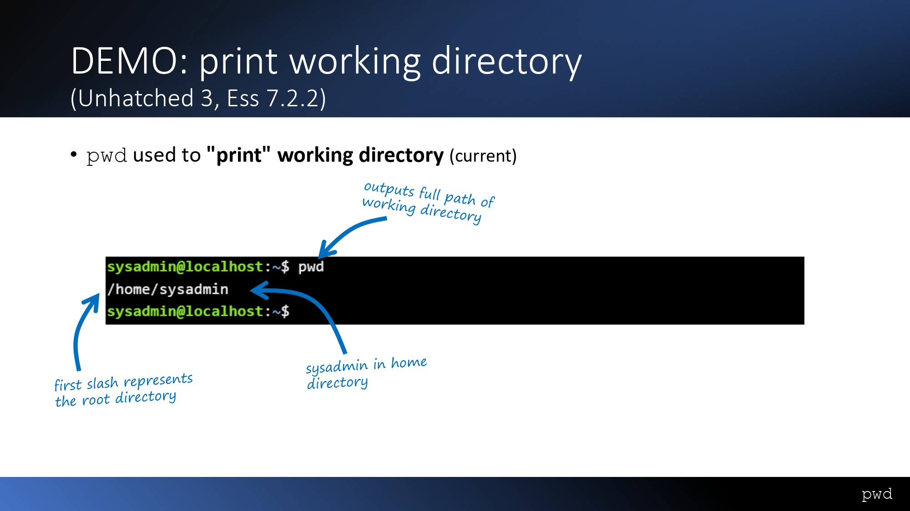
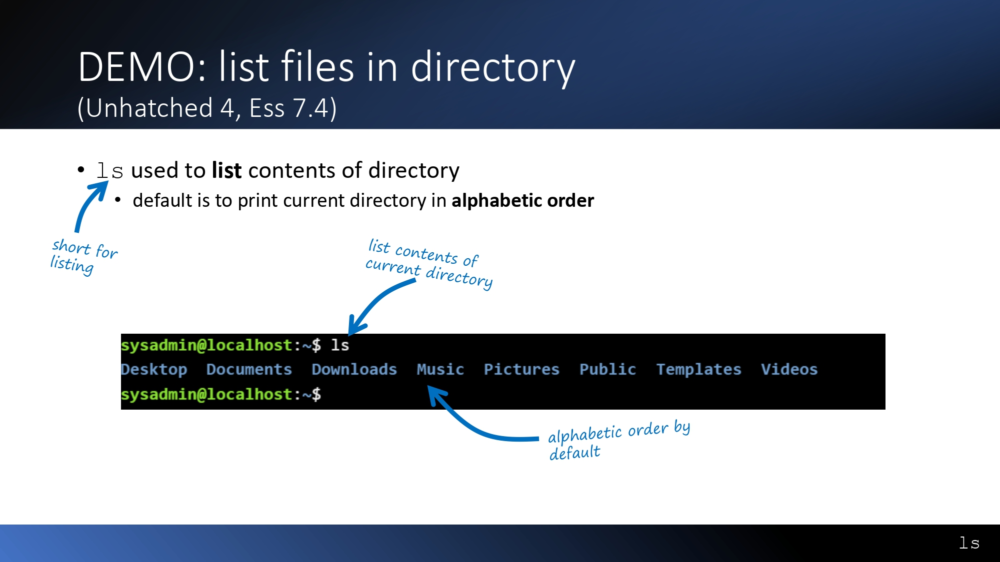
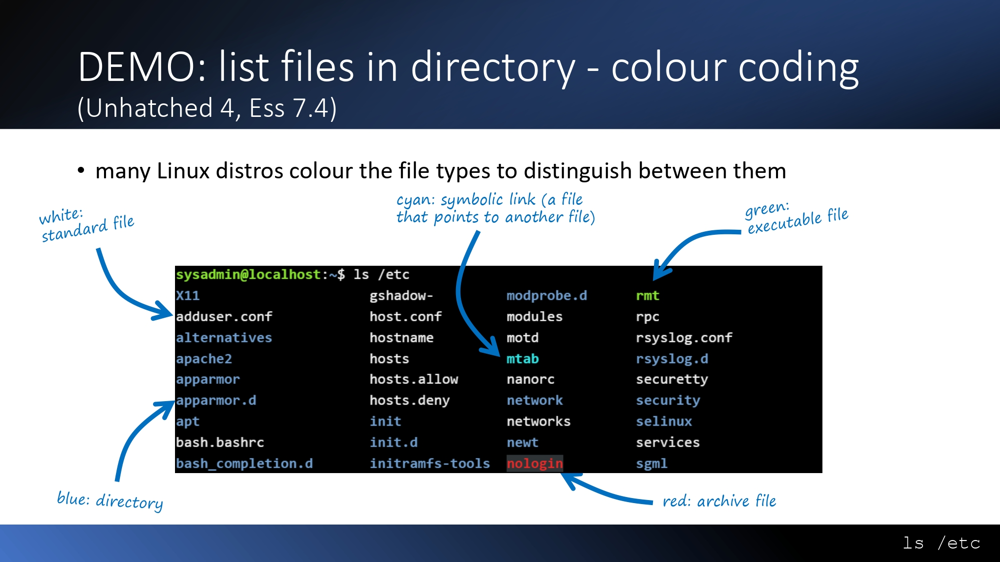
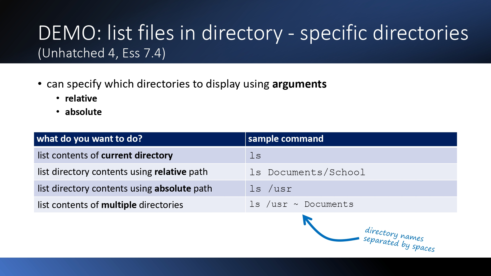
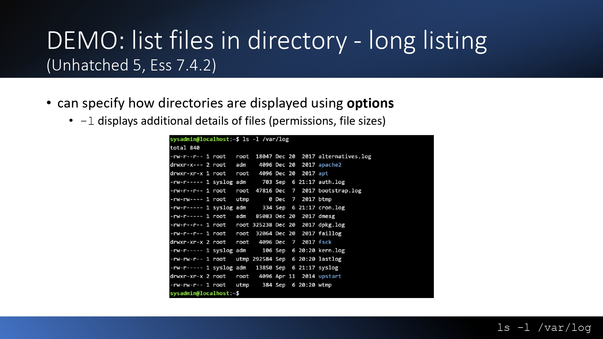
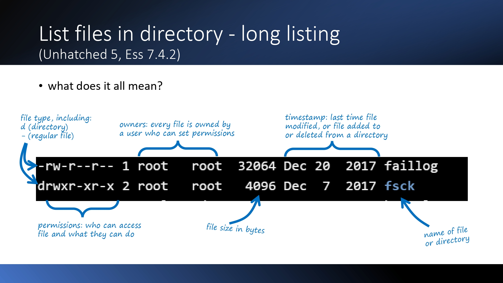
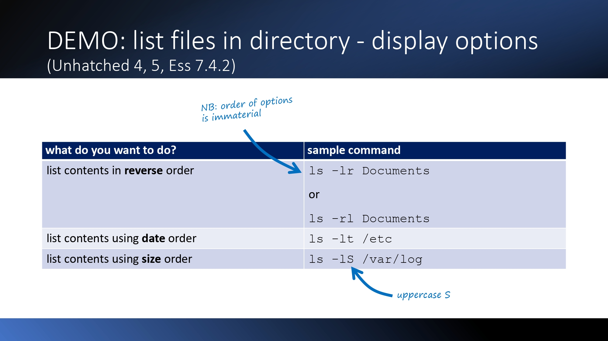
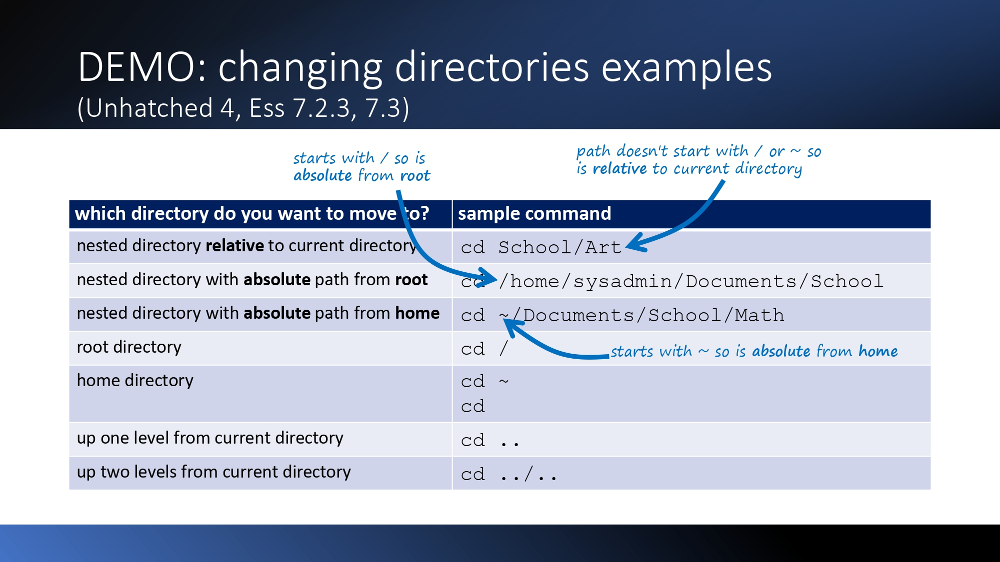
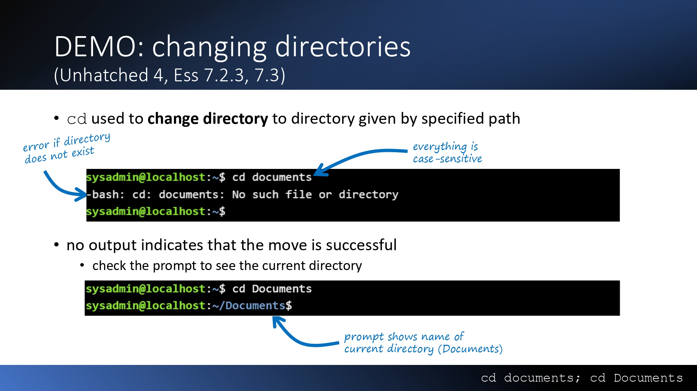

Listing Contents with ls
Start from your home directory: cd on its own always takes you home, and pwd prints where you are. Then ls shows what is inside.



| What do you want to do? | Sample command |
|---|---|
| List the current directory | ls |
| List a directory using a relative path | ls Documents/School |
| List a directory using an absolute path | ls /usr |
| List several directories at once | ls /usr ~ Documents — names separated by spaces |

pwd මගින් ඔබ සිටින directory එකේ සම්පූර්ණ මාර්ගය පෙන්වයි; පළමු slash එක root directory එක දක්වයි. ls මගින් වත්මන් directory එකේ ඇති දේ පෙරනිමියෙන් අකාරාදී පිළිවෙලට පෙන්වයි. ls Documents/School (relative), ls /usr (absolute) වැනි මාර්ග දුන් විට ඒ directory පෙන්වයි; කිහිපයක් space එකකින් වෙන් කර දිය හැක (ls /usr ~ Documents). වර්ණ: සුදු = සාමාන්ය file, නිල් = directory, cyan = symbolic link, කොළ = executable, රතු = archive.
Command Options
Options (also called flags) change how a command behaves. Short options use one hyphen; long options use two. Arguments say where to look; options say how to display.
| What do you want? | Command | Notes |
|---|---|---|
| Hidden files | ls -a · ls --all | Short and long form are identical |
| Hidden + long, combined | ls -a -l · ls -al · ls -la | All identical — letter order does not matter |
| Long listing | ls -l /var/log | Permissions, owner, size, timestamp, name |
| Reverse order | ls -lr Documents · ls -rl Documents | Order of options is immaterial |
| Date order | ls -lt /etc | Newest first |
| Size order | ls -lS /var/log | Uppercase S |
| Human readable | ls -lh Documents | Sizes in K rather than bytes |
| Include sub-directories | ls -lR ~ | Uppercase R = recursive (not -r = reverse) |



Options යනු විධානයක හැසිරීම වෙනස් කරන අමතර අකුරු ය. කෙටි ආකාරය එක් හයිෆනයකින් (-a), දිගු ආකාරය හයිෆන් දෙකකින් (--all). -l විස්තරාත්මක ලැයිස්තුවක් දෙයි; -r ප්රතිලෝම, -t දිනය අනුව, -S ප්රමාණය අනුව, -h කියවීමට පහසු ප්රමාණ, -R උප-directories ද (recursive). Options වල අනුපිළිවෙල වැදගත් නැත.
Changing Directories with cd
cd changes directory to the one given by the path. Where the path starts decides whether it is absolute or relative.
| Move to… | Sample command | Type of path |
|---|---|---|
| Nested directory, relative | cd School/Art | Relative — no leading / or ~ |
| Nested directory from root | cd /home/sysadmin/Documents/School | Absolute from root |
| Nested directory from home | cd ~/Documents/School/Math | Absolute from home |
| Root directory | cd / | — |
| Home directory | cd ~ · cd | — |
| Up one level | cd .. | — |
| Up two levels | cd ../.. | — |

/ = absolute from root; starts with ~ = absolute from home; otherwise relative.cd යනු directory වෙනස් කරන විධානයයි. / න් ආරම්භ වන මාර්ගය root සිට (absolute); ~ න් ආරම්භ වන මාර්ගය home සිට; වෙනත් ඕනෑම මාර්ගයක් දැනට සිටින directory එකට සාපේක්ෂ (relative). cd .. එක් මට්ටමක් ඉහළට, cd ../.. මට්ටම් දෙකක් ඉහළට. සාර්ථක නම් කිසිවක් print නොවේ — prompt එක බලන්න.
Case Sensitivity & the Manual
Linux treats upper and lower case as different — for commands, options and names. When unsure, read the manual.

cd documents fails; cd Documents works — everything is case-sensitive, and the prompt then shows the new directory.Linux හි case-sensitive ය: -l සහ -L වෙනස් ය; Downloads සහ downloads ද වෙනස් ය. cd documents අසාර්ථක වන අතර cd Documents සාර්ථක වේ. විධානයක සවිස්තරාත්මක උපකාරය සඳහා man ls භාවිත කරන්න; man පිටුවෙන් ඉවත් වීමට q ඔබන්න.
Tab Completion & the touch Trap
Press Tab to let the shell finish a name for you — faster typing and fewer typos.
| You type | Matches | Result |
|---|---|---|
cd De + Tab | Only Desktop | Completes to Desktop/ |
cd D + Tab | Desktop, Documents, Downloads | Nothing happens |
cd D + Tab Tab | Same three | Lists all the options |
cd Dow + Tab (Download & Downloads exist) | Share the prefix Download | Fills up to the shared part, then stops |
| Command | Name exists? | Result |
|---|---|---|
mkdir Download | — | Creates a directory with a capital D, beside Downloads |
touch Download (via Tab) | Yes — a directory | Timestamp updated, nothing else changes |
touch download (typo) | No | New empty file created, no error |
rm download | Yes — a file | File removed |
rm Download | Yes — a directory | Error: Is a directory |
rm -r Download | Yes — a directory | Directory and contents removed |
rm -r — there is no recycle bin.Tab යතුර නම ස්වයංක්රීයව සම්පූර්ණ කරයි. ගැළපෙන්නේ එක් නමක් පමණක් නම් එය සම්පූර්ණ වේ (cd De → Desktop/). නම් කිහිපයක් ගැළපේ නම් පළමු Tab එකෙන් කිසිවක් නොවේ; Tab දෙවරක් ඔබා ගැළපෙන සියල්ල ලැයිස්තුගත කරන්න. තවත් අකුරක් ටයිප් කර තෝරන්න. touch උගුල: පවතින නමකට touch කළොත් timestamp එක පමණක් යාවත්කාලීන වේ; නමේ අකුරු වැරදුණොත් (උදා: downloads) අලුත් හිස් file එකක් හැදේ, error එකක් නොපෙන්වයි. Tab භාවිත කළොත් නම පවතින බව තහවුරු වේ. file මකන්න rm, directory මකන්න rm -r.
🖥️ Practice Terminal
A simulated Ubuntu shell — nothing here touches a real system. Click the terminal and type. Supported: pwd ls cd mkdir touch rm man ls clear help, plus Tab and ↑/↓ history.
Command Reference — Output / Effect
Every command from the video and the university slides in one place. Globbing (* ? []) and echo are covered on a separate page.
| Command | Output / Effect | Source |
|---|---|---|
cd ~ | Changes to the home directory to start from a known location | Video |
pwd | Confirms you are in the home directory (prints the full working directory) | Video + slides |
ls | Lists all visible files and directories, alphabetically | Video + slides |
ls -a | Lists all files including hidden ones (starting with .) | Video |
ls --all | Same as ls -a (long-form double-dash option) | Video |
ls -l | Lists with details: permissions, owner, size, date modified | Video + slides |
ls -a -l | Combines -a and -l flags separately | Video |
ls -al | Combined shorthand — same as ls -a -l | Video |
ls -la | Same as -al, flags can be swapped | Video + slides |
man ls | Opens the manual for ls; shows all flag descriptions (q to quit) | Video |
mkdir Download | Creates a new directory named Download (capital D) | Video |
ls | Confirms Download now exists alongside Downloads | Video |
touch Download | Updates the timestamp of the existing Download directory | Video |
touch download | Creates a brand new file named download (lowercase) | Video |
ls -l | Shows both Download (dir, newer timestamp) and download (new file) | Video |
rm download | Removes the file named download | Video |
rm Download | Fails — cannot remove a directory this way | Video |
rm -r Download | Recursively removes the Download directory | Video |
Tab | Auto-completes up to the point of ambiguity | Video |
Tab Tab | Shows all matching options for the current input | Video |
ls Documents/School | Lists a directory using a relative path | Slides |
ls /usr | Lists a directory using an absolute path | Slides |
ls /usr ~ Documents | Lists several directories — names separated by spaces | Slides |
ls -l /var/log | Long listing of a specific directory | Slides |
ls -lr Documents | Reverse order (also ls -rl — order of options is immaterial) | Slides |
ls -lt /etc | List in date order | Slides |
ls -lS /var/log | List in size order (uppercase S) | Slides |
ls -lh Documents | Human-readable sizes (K rather than bytes) | Slides |
ls -lR ~ | Include sub-directories (uppercase R = recursive; -r is reverse) | Slides |
cd documents | Fails: No such file or directory — everything is case-sensitive | Slides |
cd Documents | No output = success; the prompt now shows ~/Documents | Slides |
cd School/Art | Move to a nested directory using a relative path | Slides |
cd /home/sysadmin/Documents/School | Move using an absolute path from root | Slides |
cd ~/Documents/School/Math | Move using an absolute path from home | Slides |
cd / | Move to the root directory | Slides |
cd ~ · cd | Move to the home directory | Slides |
cd .. | Up one level | Slides |
cd ../.. | Up two levels | Slides |
What to Remember for the Exam
The exact facts this lesson loves to test — memorize these cold.
- pwd prints the full path; the first / is the root directory.
- pwd prints the current directory; cd alone returns to the home directory.
- ls hides dot-files; ls -a / --all shows them. ls -l gives the long format.
- -al = -la = -a -l; one hyphen for short options, two for long. -r reverse, -t time, -S size, -h human-readable, -R recursive.
- Path starting with / = absolute from root; ~ = absolute from home; anything else = relative. cd .. up one, cd ../.. up two, no output = success.
- Linux is case-sensitive: -l ≠ -L, Downloads ≠ downloads.
- man ls shows the manual; press q to exit.
- touch on an existing name updates its timestamp; on a mistyped name it creates a new empty file. rm removes files; rm -r removes directories.
- Tab = complete as far as unambiguous; Tab Tab = list candidates.
Glossary — Acronyms & Meanings
| Term | Full term | Meaning |
|---|---|---|
| pwd | Print Working Directory | Prints the full path of the directory you are currently in. |
| ls | List | Lists directory contents; add options such as -a and -l. |
| cd | Change Directory | Moves to another directory; with no argument goes to home. |
| mkdir | Make Directory | Creates a new directory. |
| man | Manual | Opens the manual page for a command (e.g. man ls). |
| -a / --all | All | ls option that also shows hidden (dot) entries. |
| -l | Long format | ls option showing permissions, owner, size and date. |
| ~ | Home directory | Shortcut for your home directory, e.g. /home/user. |
| .. | Parent directory | Refers to the directory one level up; cd .. moves there. |
| / | Root directory | Top of the filesystem; paths starting with / are absolute. |
| -R / -r | Recursive / reverse | -R lists sub-directories too; -r reverses the sort order. |
| -h | Human readable | Shows sizes such as 4.0K instead of raw bytes. |
| touch | Touch | Updates the timestamp of an existing file or directory, or creates a new empty file if the name does not exist. |
| rm / rm -r | Remove / recursive | rm deletes files; -r is needed to delete a directory. |
| Timestamp | Timestamp | Date and time a file was last modified; shown by ls -l. |
| Tab | Tab completion | Shell feature that auto-completes file and command names. |
Comparison Tables
| Command | Shows hidden? | Long format? | Notes |
|---|---|---|---|
| ls | No | No | Names only, blue = directory |
| ls -a | Yes | No | Same as ls --all |
| ls -l | No | Yes | Permissions, owner, size, date |
| ls -al | Yes | Yes | Same as -la and -a -l |
| Path starts with | Type | Example |
|---|---|---|
/ | Absolute from root | cd /home/sysadmin/Documents |
~ | Absolute from home | cd ~/Documents/School/Math |
| anything else | Relative to current directory | cd School/Art |
| Situation | 1st Tab | 2nd Tab |
|---|---|---|
| One match | Completes the name | — |
| Several matches, no shared prefix beyond what is typed | Nothing | Lists all matches |
| Several matches with a longer shared prefix | Fills the shared part | Lists all matches |
🇱🇰 Sinhala Vocabulary — පාඩමෙහි දුෂ්කර වචන
This lesson’s difficult English words — with Sinhala meanings and example sentences from daily life, networking, software, hardware and cyber security.
A folder that holds files and other folders.
ගොනු සහ වෙනත් ෆෝල්ඩර අඩංගු ෆෝල්ඩරයක් (නාමාවලිය)
- DailyI keep every assignment inside one directory called Semester1.
- NetworkThe server stores each user’s files in a separate directory.
- SoftwareUse
cdto move from one directory to another. - HardwareThe BIOS reads the boot directory on the disk first.
- CyberAn attacker listed the directory to find sensitive files.
Not shown by default; kept out of sight.
සාමාන්යයෙන් නොපෙන්වන, සැඟවුණු
- DailyShe found a hidden message in the old notebook.
- NetworkDot-files are hidden unless you use
ls -a. - SoftwareThe installer places a hidden settings file in your home folder.
- HardwareSome partitions are hidden from the normal file manager.
- CyberMalware often tries to stay hidden from the user.
An extra setting added to a command to change what it does.
විධානයක ක්රියාව වෙනස් කිරීමට එක් කරන අමතර සැකසුමක්
- DailyPick the vegetarian option on the menu.
- NetworkIn
ls -l, the letter l is an option. - SoftwareEach option changes the output format of the command.
- HardwareThe BIOS has an option to change the boot order.
- CyberA scanner’s verbose option prints more detail.
The first part of a word or name.
වචනයක හෝ නමක ආරම්භක කොටස
- Daily“Un” is a common prefix in English.
- NetworkTab completion matches the prefix you have typed.
- SoftwareIf two names share a prefix, Tab fills only the shared part.
- HardwareA network prefix such as 192.168.1 identifies the subnet.
- CyberAttackers guess passwords using a known prefix.
Having more than one possible meaning or match.
අර්ථ හෝ ගැළපීම් එකකට වඩා ඇති, අපැහැදිලි
- DailyHer answer was ambiguous, so nobody knew what she meant.
- NetworkTyping
cd Dis ambiguous when three folders start with D. - SoftwareWhen a name is ambiguous, the shell cannot complete it.
- HardwareAn ambiguous hardware label caused the wrong cable to be used.
- CyberAn ambiguous firewall rule can leave a port open by mistake.
📝 MCQ Practice Test — 30 Questions
The module’s final assessment is a Multiple Choice online class test — so practice in that exact format. 30 exam-style MCQs covering every section of the lesson. Click an option to check it; only one attempt is scored per question.